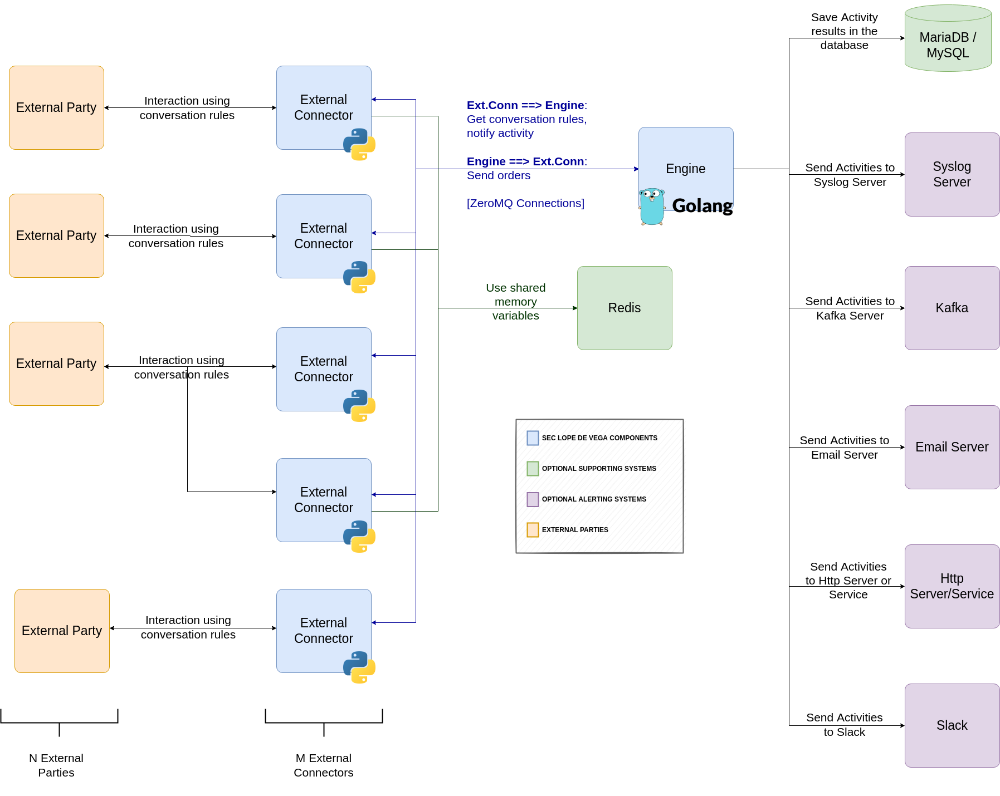

2. Architecture¶
As mentiond previously, Lope is composed of two main components: The external connector and the engine, but there could be more components in the landscape:
The external parties: They are the elements that connect to Lope, or Lope connects to them (depending on if the software is working as a client or as a server)
Redis server: In Session Support & Memory Variables section, the concept of memory variables is explained in detail but here we can say that the interaction can use some variables in the interactions. These variables are saved in different ‘memories’, that is why they have that name. One of the memories is shared among different external connectors, and this can take place because the redis server. This component is an optional component only needed if you wish to share variables among different external connectors, and only for those that are using those variables. This means that not all external connectors must be connected to redis, only those that use that capability. Here you can find more information about Redis.
The engine is receiving all activities generated by the external connectors, and it can do several things with that information. The default option is to save them in a simple file, but other options are also possible. The following components can be used to have specific capabilities about what to do with these activities, so they are optional to run the software and only needed for specific use cases. These components are not provided by this project, and it is up to the operator to install them and configure them, Lope only provides the capability to connect with them and use them.
MariaDB/MySQL Database: This component is needed to save the activities in a database. It could be either MariaDB database or MySQL database.
Syslog server: Lope needs this component to send the alerts of the activities via syslong.
Kafka server: This component is used when you wish to have the alerts of the activities to be sent via Kafka.
Email server: This component is required if you wish to send alerts via emails.
HTTP server/service: This element is needed if you wish to send alerts to a web server or service using HTTP calls.
In the following image, you can find a graphical representation of the potential architecture:
{kind=link}
It is important to highlight that every external connector interacts with one target system (external party), but one external party can interact with several external connectors. It can happen that you have ‘N’ external parties interacting with ‘M’ external connectors. That is why every external connector works with a single port, protocol and mode (client or server). Therefore, an external party can interact with several ports at the same time, where each of them is managed by a different external connector. This allows the creation of complex scenarios where several external connectors can work together with different duties. In any case, all of them must be connected with the engine that is controlling that execution of the scenario and centralizing the data gathering.
As described previously, in case a Redis server is present, not all external connectors must connect with that component, and the rest of comports are optional. The minimal setup will be one external party interacting with one external connector, and one engine controlling the execution. One example of the previous scenario can be the following:, if you use Lope in a software development pipeline, you can start the engine and the external connector, do the test you wish against the software under development, and get the results.